TSF4 - Le télésiège des Folliets
Les Portes du Soleil et les Gets
Le domaine skiable des Portes du Soleil est un vaste espace franco-suisse regroupant douze stations, où l'on skie entre 900 et 2275 mètres d'altitude sur plus de 450 kilomètres de pistes. Situé au cœur du massif du Chablais, il bénéficie d'un enneigement réputé, notamment à Avoriaz.
Les Gets, village de 1500 habitants à l'année installé à 1160 mètres d'altitude, propose un domaine relié à celui de Morzine, pour près de 120 kilomètres de pistes réparties sur deux secteurs distincts de part et d'autre du village : le Mont Chéry au nord, plus sportif et exposé sud-est, et les Chavannes au sud, plus fréquenté et relié à Morzine.
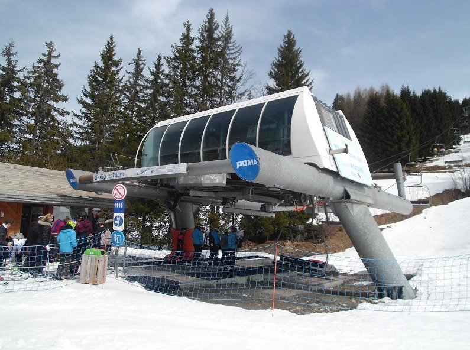
Histoire du secteur
Le ski débute aux Gets en 1937 avec la construction du téléski de la Boule de Gomme sur le versant des Chavannes. L'équipement de ce versant se poursuit dans les années 1950, puis la liaison à ski avec Morzine devient possible dès 1962 avec le téléski de la Tête des Crêts.
En 1979, le télésiège triplace de la Charniaz simplifie considérablement le trajet de Morzine vers les Gets. Mais dans l'autre sens, rejoindre Morzine depuis les Gets restait un long détour, enchaînant plusieurs téléskis et télésièges. Cette situation prend fin en 1998, avec la construction d'un télésiège quadriplace Pomagalski au-dessus du quartier des Folliets du Golf, sur un secteur jusque-là vierge de toute remontée.
L'appareil appartient à la famille des télésièges Alpha de Poma, reconnaissable à ses gares motrices-tensions caractéristiques. Il dispose d'un tapis de positionnement à l'embarquement, destiné à faciliter la montée sur le siège.
Localisation géographique
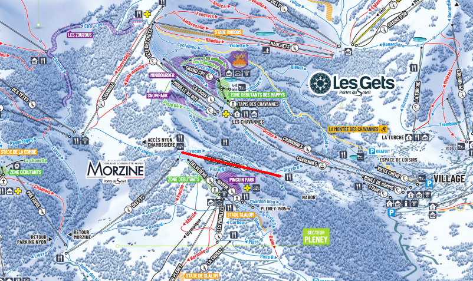
Situation
Le télésiège des Folliets assure la liaison entre les Gets et Morzine. Il dessert également plusieurs pistes : la bleue Crocus, qui redescend en serpentant sur les terrains de golf ; la bleue Granges, qui mène au pied des télésièges des Têtes, de la Charniaz et des Troncs ; la bleue Piste B, qui longe la ligne du télésiège du Belvédère jusqu'au front de neige de Morzine ; et la rouge Piste F, qui redescend jusqu'au télésiège d'Atray.
Caractéristiques
Le télésiège des Folliets est un télésiège à attaches fixes 4 places, construit par Poma et mis en service en 1998. Il fonctionne en saison hivernale, avec une capacité de 1630 personnes par heure à une vitesse d'exploitation de 2,5 m/s, pour un temps de trajet d'environ 4 minutes.
La gare aval se situe à 1362 mètres d'altitude et la gare amont à 1551 mètres, soit un dénivelé de 189 mètres pour une longueur développée de 884 mètres. La pente moyenne est de 23,14 % et la pente maximale atteint 50 %.
La gare aval, de type Alpha à six vitres, assure la motricité et la tension hydraulique de l'installation. La montée s'effectue par la gauche. La ligne compte 6 pylônes et l'installation dispose de 77 sièges Arceau Poma 4 places.
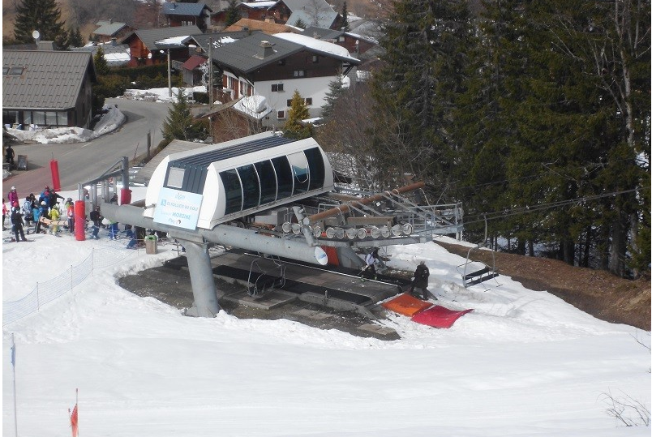
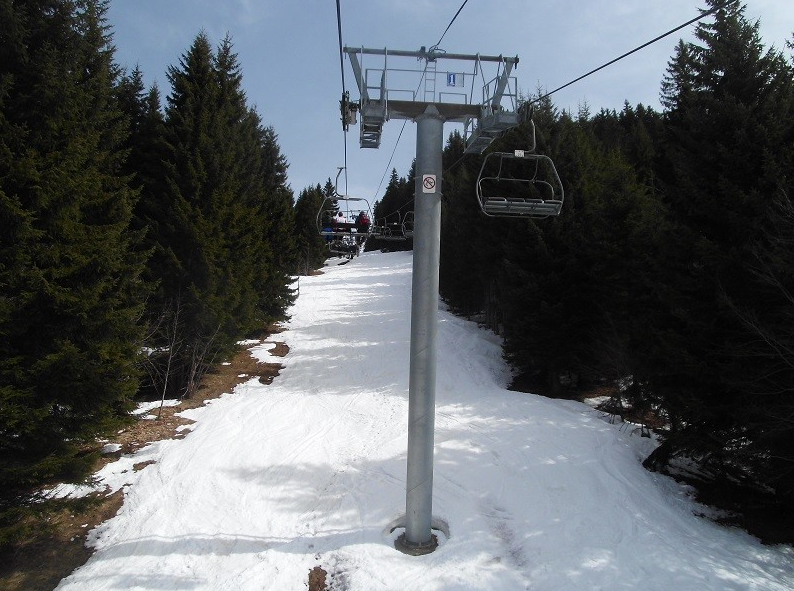
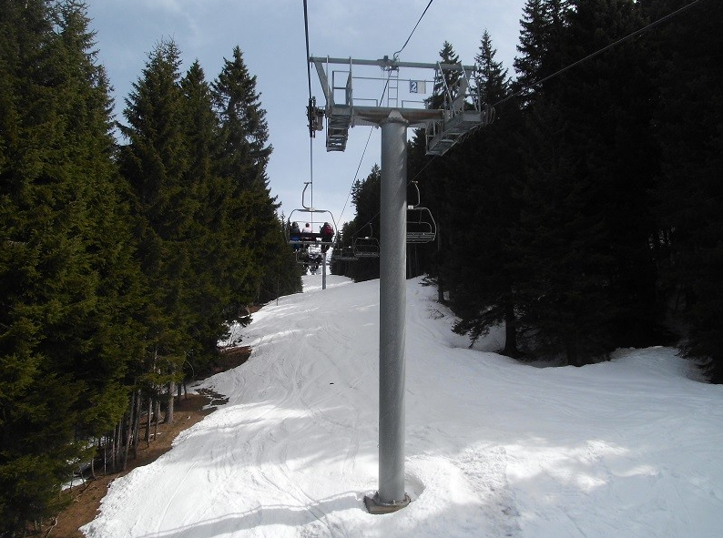
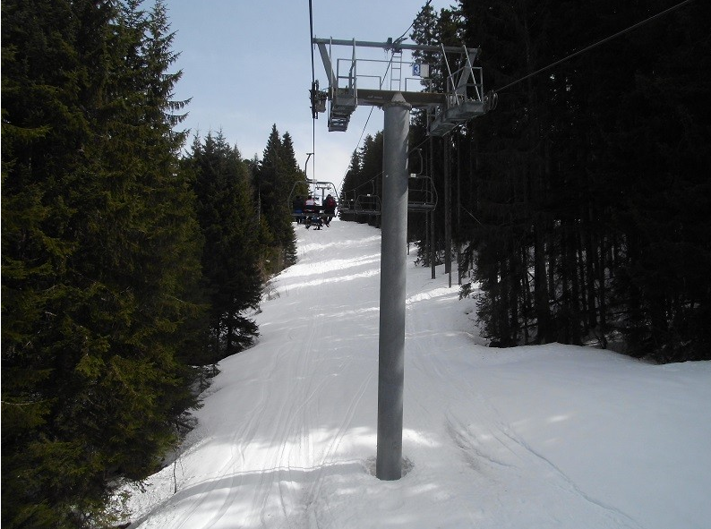
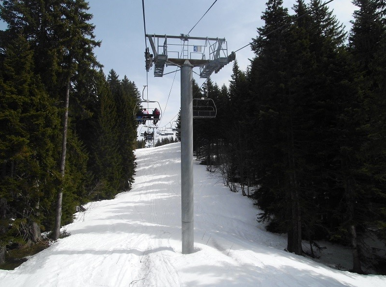
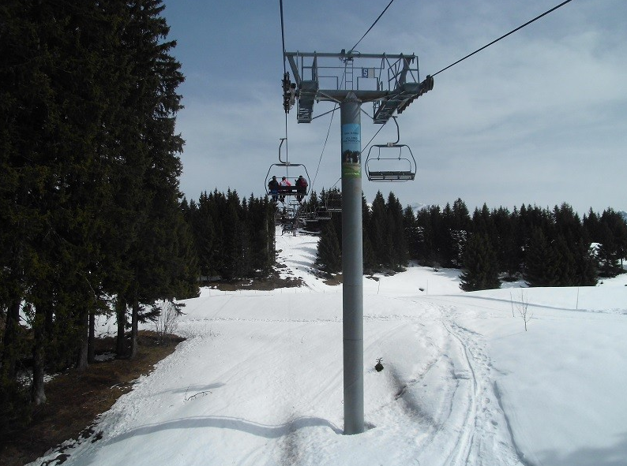
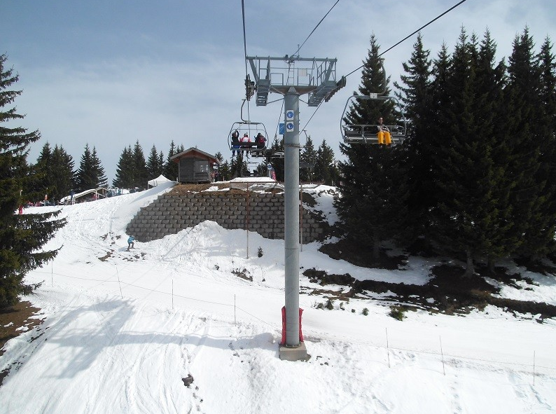
Gare amont
La gare amont du télésiège des Folliets est une simple poulie retour fixe, typique des installations Poma de cette génération. L'arrivée en gare amont se fait à proximité du site accueillant le festival Rock the Pistes.
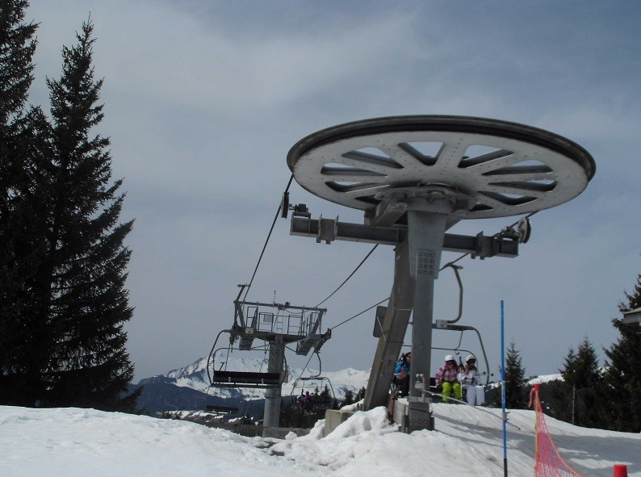
Sièges et pinces
Les 77 sièges de l'appareil sont des sièges Arceau Poma 4 places, équipés de pinces fixes classiques pour cette génération de télésièges.
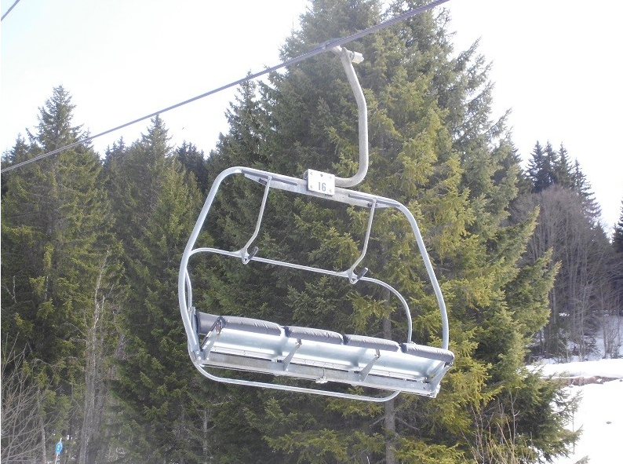
Conclusion
Construit par Poma en 1998, le télésiège des Folliets a mis fin à un long détour pour rejoindre Morzine depuis les Gets. Très fréquenté, il continue de bien remplir son rôle de liaison, et sa jeunesse relative ainsi que la faible longueur de son tracé ne laissent présager aucun remplacement à court terme.